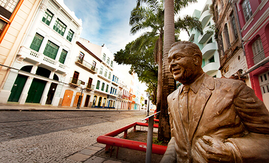
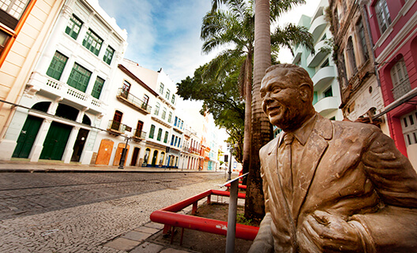

Voltando agora para a ilha do Recife, vamos conhecer um dos lugares mais lindos da cidade. A Rua do Bom Jesus fica pertinho do Marco Zero, e é um daqueles pontos de visitação obrigatória.
Recentemente, essa ruazinha repleta de casas históricas foi eleita, por uma revista de arquitetura dos Estados Unidos, como a terceira rua mais bonita do mundo. E não é para menos: a beleza da Bom Jesus é de tirar o fôlego.
Além de ser considerada uma das ruas mais bonitas do mundo, a Bom Jesus também é tida como a rua mais antiga da cidade. Ou seja, tem motivos de sobra para fazer dela um dos grandes pontos turísticos de Recife.